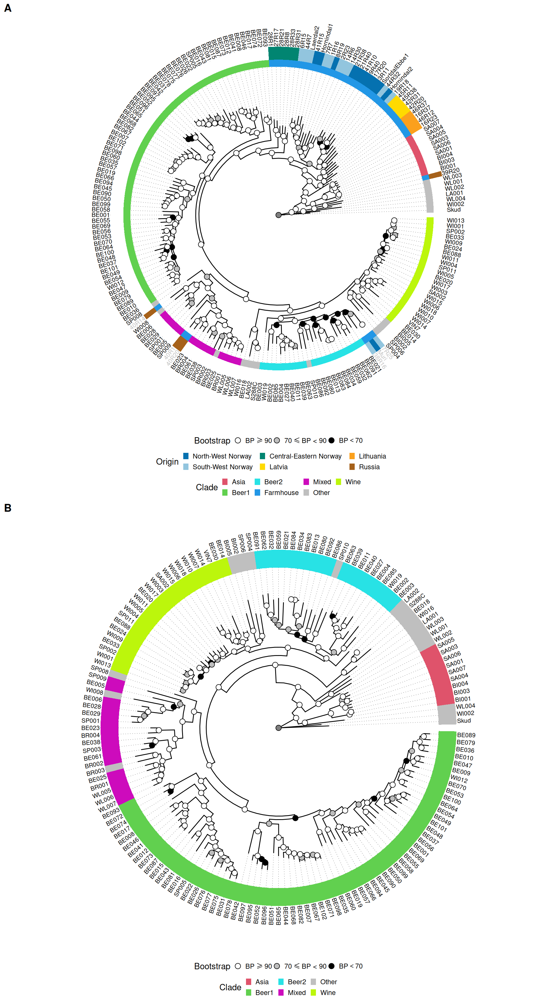

17 Figure S5
17.1 Figure S5 code
17.1.1 Panel A code
#------------------------------------------------------------------------------#
## 1.1 - Import data and prep tree ####
# mapping swap_yeasts
to_swap = data.frame(
old_name = c("21P1", "17P5", "45P5", "28P1", "28P6"),
new_name = c("21R40", "17R20", "45R38", "28R31", "28R1")
)
# import final calde list
final_clades = read.table(
"./data/p02-11/final_clades_for_pub.txt",
sep = "\t",
header = TRUE,
stringsAsFactors = FALSE
)
# load tree
best_tree = read.tree("./data/p02-11/clstr.all.concat.nt.align.short.tre")
best_tree = as.phylo(best_tree)
best_tree$node.label = as.numeric(as.character(best_tree$node.label))
best_tree = ape::root(best_tree,
which(best_tree$tip.label %in% c("Skud")),
edgelabel = TRUE)
best_tree = ladderize(best_tree, right = TRUE)
# load annotations
tree_annot_raw = read.table("./data/p02-11/genetrees.output.BS.annot-PETER.txt",
sep = "\t",
header = TRUE,
stringsAsFactors = FALSE)
tree_annot_raw = data.frame(tree_annot_raw)
tree_annot = tree_annot_raw[, -which(colnames(tree_annot_raw) == "seq_name")]
tree_annot$Origin = factor(tree_annot$niche3,
levels = c("North-West Norway", "South-West Norway","Central-Eastern Norway",
"Latvia", "Lithuania", "Russia", ""))
colnames(tree_annot) = c("Strain", "Name", "Niche", "niche2", "niche3", "group", "Origin")
tree_annot$Niche = ifelse(tree_annot$Niche == "farmhouse", "Farmhouse", tree_annot$Niche)
for(k in 1:nrow(to_swap)){
tree_annot$Strain = stringr::str_replace(
tree_annot$Strain,
to_swap[k, "old_name"],
to_swap[k, "new_name"]
)
tree_annot$Name = stringr::str_replace(
tree_annot$Name,
to_swap[k, "old_name"],
to_swap[k, "new_name"]
)
best_tree$tip.label = stringr::str_replace(
best_tree$tip.label,
to_swap[k, "old_name"],
to_swap[k, "new_name"]
)
}
# merge with last clade grouping from 20250630
tree_annot = tree_annot %>%
dplyr::left_join(., final_clades, by = "Strain")
tree_annot$Clade = ifelse(tree_annot$Niche == "Farmhouse", "Farmhouse", tree_annot$Clade)
tree_annot$Clade = ifelse(
is.na(tree_annot$Clade) & tree_annot$group == 'beer2',
"Beer2", tree_annot$Clade
)
tree_annot$Clade = ifelse(
is.na(tree_annot$Clade) & tree_annot$group == 'wine',
"Wine", tree_annot$Clade
)
tree_annot$Clade = ifelse(
is.na(tree_annot$Clade) & tree_annot$group == 'asian',
"Asia", tree_annot$Clade
)
tree_annot$Clade = ifelse(is.na(tree_annot$Clade), "Other", tree_annot$Clade)
gpinfo = list(Beer1 = tree_annot$Strain[tree_annot$Clade == 'Beer1'],
Beer2 = tree_annot$Strain[tree_annot$Clade == 'Beer2'],
Wine = tree_annot$Strain[tree_annot$Clade == 'Wine'],
Asian = tree_annot$Strain[tree_annot$Clade == 'Asia'],
Farmhouse = tree_annot$Strain[tree_annot$Clade == 'Farmhouse'],
Mixed = tree_annot$Strain[tree_annot$Clade == 'Mixed'],
Other = tree_annot$Strain[tree_annot$Clade == 'Other'])
#relabel nodes
best_tree = treeio::rename_taxa(best_tree, data = tree_annot, Name, Strain)
best_tree = ggtree::groupOTU(best_tree, gpinfo)
#------------------------------------------------------------------------------#
## 1.2 - Plot tree ####
selected_labels = c("Muri", "7R25", "38R16", "40R14", "40R20", "40R1")
all_other_labels = best_tree$tip.label[-which(best_tree$tip.label %in% selected_labels)]
# plot
p_ML = ggtree(best_tree,
#aes(color = group),
layout = "fan",
open.angle = 0) +
geom_tiplab2(aes(subset = isTip & label %in% all_other_labels),
color = "black",
align = TRUE,
linesize = 0.125,
offset = 0.0038,
size = 2.75) +
geom_tiplab2(aes(subset = isTip & label %in% selected_labels),
color = "grey75",
align = TRUE,
linesize = 0.125,
offset = 0.0038,
size = 2.75) +
scale_color_manual(values = c(2, 3, 4, 5, 6, '#000000', 7, 8))+
geom_nodepoint(aes(fill = cut(as.numeric(label),
c(0, 70, 90, 100))), shape = 21, size = 3) +
theme_tree(legend.position = c(0.1, 0.55)) +
scale_fill_manual(values = c("white", "grey", "black"),
guide = "legend",
name = "Bootstrap",
breaks = c("(90,100]", "(70,90]", "(0,70]"),
labels = expression(BP>=90,70 <= BP * " < 90", BP < 70))+
labs(title = 'Phylogenetic Tree', color = 'Clade') +
theme(legend.position = "bottom",
legend.box = "vertical",
legend.box.background = element_rect(colour = "white"),
legend.margin = margin(t = 0, unit = "cm"),
legend.key.size = unit(0.25, "cm"),
plot.title = element_blank())
#p = ggtree::flip(p, 258, 325)
p_ML = p_ML +
new_scale_fill() +
ggtreeExtra::geom_fruit(data = tree_annot,
geom = geom_tile,
mapping = aes(y = Strain, fill = Clade),
color = NA, offset = 0.045, pwidth = 0.0025) +
scale_fill_manual(values = c("#df536b", "#61d04f", "#28e2e5", "#2297e6", "#cd0bbc", "grey75", "#bcf60c")) +
# scale_fill_manual(values = c('#e6194b', '#3cb44b', '#ffe119', '#4363d8', '#f58231',
# '#911eb4', '#46f0f0', '#f032e6', '#bcf60c', '#fabebe',
# '#008080', '#e6beff', '#9a6324', '#fffac8', '#800000',
# '#aaffc3', '#808000', '#ffd8b1', '#000075', '#808080',
# '#ffffff', '#000000')) +
new_scale_fill() +
ggtreeExtra::geom_fruit(data = tree_annot,
geom = geom_tile,
mapping = aes(y = Strain, fill = Origin),
color = NA, offset = 0.0475, pwidth = 0.0025) +
scale_fill_manual(values = c('#0571B0',
'#92C5DE',
'#018571',
'#FFDA00',
'#FBA01D',
'#A6611A',
'#ffffff')) +
labs(fill = "Origin") +
theme(legend.position = "bottom",
legend.box = "vertical",
legend.box.background = element_rect(colour = "white"),
legend.margin = margin(t = 0, unit = "cm"),
legend.key.size = unit(0.25, "cm"),
plot.title = element_blank())17.1.2 Panel B code
#==============================================================================#
# 2 - Maximum Likelihood tree no Farmhouse ####
#------------------------------------------------------------------------------#
## 2.1 - Import data ####
# load tree
best_tree = read.tree("./data/p02-11/clstr.all.concat.nt.align.noKV.short.tre")
best_tree = as.phylo(best_tree)
best_tree$node.label = as.numeric(as.character(best_tree$node.label))
best_tree = ape::root(best_tree,
which(best_tree$tip.label %in% c("Skud")),
edgelabel = TRUE)
best_tree = ladderize(best_tree, right = TRUE)
# load annotations
tree_annot_raw = read.table("./data/p02-11/genetrees.output.BS.annot-PETER.txt",
sep = "\t",
header = TRUE,
stringsAsFactors = FALSE)
tree_annot_raw = data.frame(tree_annot_raw)
tree_annot = tree_annot_raw[, -which(colnames(tree_annot_raw) == "seq_name")]
tree_annot$Origin = factor(tree_annot$niche3,
levels = c("North-West Norway", "South-West Norway","Central-Eastern Norway",
"Latvia", "Lithuania", "Russia", ""))
colnames(tree_annot) = c("Strain", "Name", "Niche", "niche2", "niche3", "group", "Origin")
tree_annot$Niche = ifelse(tree_annot$Niche == "farmhouse", "Farmhouse", tree_annot$Niche)
for(k in 1:nrow(to_swap)){
tree_annot$Strain = stringr::str_replace(
tree_annot$Strain,
to_swap[k, "old_name"],
to_swap[k, "new_name"]
)
tree_annot$Name = stringr::str_replace(
tree_annot$Name,
to_swap[k, "old_name"],
to_swap[k, "new_name"]
)
best_tree$tip.label = stringr::str_replace(
best_tree$tip.label,
to_swap[k, "old_name"],
to_swap[k, "new_name"]
)
}
# merge with last clade grouping from 20250630
tree_annot = tree_annot %>%
dplyr::left_join(., final_clades, by = "Strain")
tree_annot$Clade = ifelse(tree_annot$Niche == "Farmhouse", "Farmhouse", tree_annot$Clade)
tree_annot$Clade = ifelse(
is.na(tree_annot$Clade) & tree_annot$group == 'beer2',
"Beer2", tree_annot$Clade
)
tree_annot$Clade = ifelse(
is.na(tree_annot$Clade) & tree_annot$group == 'wine',
"Wine", tree_annot$Clade
)
tree_annot$Clade = ifelse(
is.na(tree_annot$Clade) & tree_annot$group == 'asian',
"Asia", tree_annot$Clade
)
tree_annot$Clade = ifelse(is.na(tree_annot$Clade), "Other", tree_annot$Clade)
gpinfo = list(Beer1 = tree_annot$Strain[tree_annot$Clade == 'Beer1'],
Beer2 = tree_annot$Strain[tree_annot$Clade == 'Beer2'],
Wine = tree_annot$Strain[tree_annot$Clade == 'Wine'],
Asian = tree_annot$Strain[tree_annot$Clade == 'Asia'],
Farmhouse = tree_annot$Strain[tree_annot$Clade == 'Farmhouse'],
Mixed = tree_annot$Strain[tree_annot$Clade == 'Mixed'],
Other = tree_annot$Strain[tree_annot$Clade == 'Other'])
#relabel nodes
best_tree = treeio::rename_taxa(best_tree, data = tree_annot, Name, Strain)
best_tree = ggtree::groupOTU(best_tree, gpinfo)
# plot
p_ML_noK = ggtree(best_tree,
#aes(color = group),
layout = "fan",
open.angle = 0) +
geom_tiplab2(color = "black",
align = TRUE,
linesize = 0.125,
offset = 0.0028,
size = 2.75) +
scale_color_manual(values = c(2, 3, 4, 6, '#000000', 7, 8))+
geom_nodepoint(aes(fill = cut(as.numeric(label),
c(0, 70, 90, 100))), shape = 21, size = 3) +
theme_tree(legend.position = c(0.1, 0.55)) +
scale_fill_manual(values = c("white", "grey", "black"),
guide = "legend",
name = "Bootstrap",
breaks = c("(90,100]", "(70,90]", "(0,70]"),
labels = expression(BP>=90,70 <= BP * " < 90", BP < 70))+
labs(title = 'Phylogenetic Tree', color = 'Clade') +
theme(legend.position = "bottom",
legend.box = "vertical",
legend.box.background = element_rect(colour = "white"),
legend.margin = margin(t = 0, unit = "cm"),
legend.key.size = unit(0.25, "cm"),
plot.title = element_blank())
p_ML_noK = p_ML_noK +
new_scale_fill() +
ggtreeExtra::geom_fruit(data = tree_annot,
geom = geom_tile,
mapping = aes(y = Strain, fill = Clade),
color = NA, offset = 0.07, pwidth = 0.0025) +
scale_fill_manual(values = c("#df536b", "#61d04f", "#28e2e5", "#cd0bbc", "grey75", "#bcf60c")) +
theme(legend.position = "bottom",
legend.box = "vertical",
legend.box.background = element_rect(colour = "white"),
legend.margin = margin(t = 0, unit = "cm"),
legend.key.size = unit(0.25, "cm"),
plot.title = element_blank())17.1.3 Merge
17.2 Figure S5 plot

17.3 Session Information
Note
R version 4.3.3 (2024-02-29)
Platform: x86_64-pc-linux-gnu (64-bit)
Running under: Ubuntu 24.04.3 LTS
Matrix products: default
BLAS: /usr/lib/x86_64-linux-gnu/blas/libblas.so.3.12.0
LAPACK: /usr/lib/x86_64-linux-gnu/lapack/liblapack.so.3.12.0
locale:
[1] LC_CTYPE=en_US.UTF-8 LC_NUMERIC=C LC_TIME=C
[4] LC_COLLATE=en_US.UTF-8 LC_MONETARY=C LC_MESSAGES=en_US.UTF-8
[7] LC_PAPER=C LC_NAME=C LC_ADDRESS=C
[10] LC_TELEPHONE=C LC_MEASUREMENT=C LC_IDENTIFICATION=C
time zone: Europe/Brussels
tzcode source: system (glibc)
attached base packages:
[1] grid stats graphics grDevices utils datasets methods
[8] base
other attached packages:
[1] treeio_1.26.0 stringr_1.5.1 reshape_0.8.10 RColorBrewer_1.1-3
[5] pophelper_2.3.1 naturalsort_0.1.3 gridExtra_2.3 ggtreeExtra_1.12.0
[9] ggtree_3.10.1 ggplot2_3.5.2 ggnewscale_0.5.2 aplot_0.2.8
[13] ape_5.8-1
loaded via a namespace (and not attached):
[1] yulab.utils_0.2.0 generics_0.1.4 tidyr_1.3.1
[4] ggplotify_0.1.2 lpSolve_5.6.23 stringi_1.8.7
[7] lattice_0.22-5 digest_0.6.37 magrittr_2.0.3
[10] evaluate_1.0.4 fastmap_1.2.0 plyr_1.8.9
[13] jsonlite_2.0.0 combinat_0.0-8 purrr_1.1.0
[16] scales_1.4.0 label.switching_1.8 lazyeval_0.2.2
[19] cli_3.6.5 rlang_1.1.6 cowplot_1.2.0
[22] tidytree_0.4.6 withr_3.0.2 yaml_2.3.10
[25] tools_4.3.3 parallel_4.3.3 dplyr_1.1.4
[28] vctrs_0.6.5 R6_2.6.1 gridGraphics_0.5-1
[31] lifecycle_1.0.4 fs_1.6.6 htmlwidgets_1.6.4
[34] ggfun_0.2.0 pkgconfig_2.0.3 pillar_1.11.0
[37] gtable_0.3.6 glue_1.8.0 Rcpp_1.1.0
[40] xfun_0.52 tibble_3.3.0 tidyselect_1.2.1
[43] knitr_1.50 dichromat_2.0-0.1 farver_2.1.2
[46] htmltools_0.5.8.1 nlme_3.1-164 patchwork_1.3.1
[49] labeling_0.4.3 rmarkdown_2.29 compiler_4.3.3